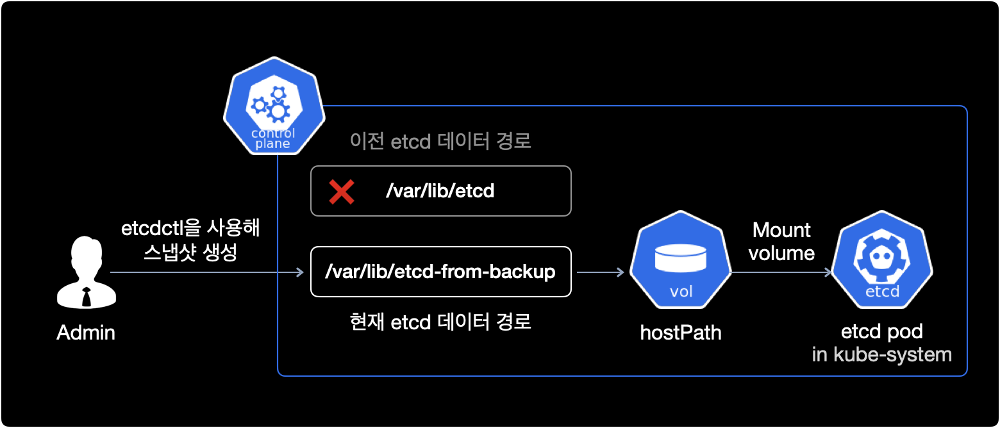

etcd 백업 복구
개요
etcd는 kubernetes 클러스터에서 key-value 저장소입니다.
etcd는 모든 쿠버네티스 클러스터, 리소스 그리고 오브젝트에 대한 정보를 저장합니다.
etcd 안에 들어있는 데이터를 주기적으로 백업하는 일은 재해 복구 측면에서 매우 중요합니다.
클러스터의 컨트롤 플레인에 문제가 생겼을 경우 etcd 데이터를 활용해 모든 리소스, 오브젝트를 원래대로 복구할 수 있습니다.
참고사항
AWS의 Managed Kubernetes 서비스인 EKS를 사용하는 환경일 경우, AWS에서 컨트롤 플레인 전체 영역을 대신 관리해주고 있기 때문에 etcd 백업과 복구를 수행할 수 없습니다.
etcd 백업과 복구 절차는 쿠버네티스 관리자 자격증인 CKACertified Kubernetes Administrator에서도 필수 문제로 출제됩니다.
환경
1대의 컨트롤 플레인으로만 구성된 쿠버네티스 클러스터 환경입니다.
쿠버네티스 클러스터 구성은 kubeadm을 사용했습니다.
$ kubectl get node -o wide
NAME STATUS ROLES AGE VERSION INTERNAL-IP EXTERNAL-IP OS-IMAGE KERNEL-VERSION CONTAINER-RUNTIME
controlplane Ready control-plane,master 2m7s v1.23.0 10.31.137.3 <none> Ubuntu 18.04.6 LTS 5.4.0-1086-gcp docker://19.3.0
- OS : Ubuntu 18.04.6 LTS
- etcdctl : 3.3.13 (API Version 3.3 사용)
- docker engine : 19.3.0
상세 정보
컨트롤 플레인의 디테일한 버전 정보는 다음과 같습니다.
OS 버전
$ cat /etc/os-release
NAME="Ubuntu"
VERSION="18.04.6 LTS (Bionic Beaver)"
etcdctl 버전
$ etcdctl version
etcdctl version: 3.3.13
API version: 3.3
도커 엔진 버전
$ docker version
Client: Docker Engine - Community
Version: 19.03.0
API version: 1.40
Go version: go1.12.5
Git commit: aeac949
Built: Wed Jul 17 18:15:07 2019
OS/Arch: linux/amd64
Experimental: false
Server: Docker Engine - Community
Engine:
Version: 19.03.0
API version: 1.40 (minimum version 1.12)
Go version: go1.12.5
Git commit: aeac949
Built: Wed Jul 17 18:13:43 2019
OS/Arch: linux/amd64
Experimental: false
containerd:
Version: 1.4.4
GitCommit: 05f951a3781f4f2c1911b05e61c160e9c30eaa8e
runc:
Version: 1.0.0-rc93
GitCommit: 12644e614e25b05da6fd08a38ffa0cfe1903fdec
docker-init:
Version: 0.18.0
GitCommit: fec3683
전제조건
ETCD를 관리하는 CLI 툴인 etcdctl을 클러스터 관리 전용 호스트 머신 또는 컨트롤 플레인에 미리 설치해야 합니다.
etcd 스냅샷 백업
etcd 파드 확인
클러스터에 배포된 etcd 파드 목록을 확인합니다.
$ kubectl get pod \
-n kube-system \
-l component=etcd \
-o wide
1개의 etcd 파드가 컨트롤 플레인 노드에 배치되어 운영중인 상태입니다.
NAME READY STATUS RESTARTS AGE IP NODE NOMINATED NODE READINESS GATES
etcd-controlplane 1/1 Running 0 20m 10.9.7.6 controlplane <none> <none>
etcd 파드는 controlplane 노드에서 동작하고 있는 상태입니다.
etcd 이미지 버전 확인
$ kubectl get pod etcd-controlplane \
-n kube-system \
-o jsonpath='{.spec.containers[*].image}'
k8s.gcr.io/etcd:3.5.1-0
etcd 이미지로 etcd:3.5.1-0을 사용하고 있습니다.
인증서 정보 확인
etcd 스냅샷 생성을 위해 필요한 etcd 파드의 4가지 정보를 확인합니다.
cert-filekey-filetrusted-ca-filelisten-client-urls(endpoints)
$ kubectl get pod etcd-controlplane \
-n kube-system \
-o yaml \
| egrep '.crt|.key'
--cert-file, --key-file, --trusted-ca-file 파일의 절대경로를 확인합니다.
etcd 운영에 필요한 모든 인증서들이 보관되는 기본 경로는 /etc/kubernetes/pki/etcd/ 입니다.
...
- --cert-file=/etc/kubernetes/pki/etcd/server.crt # using --cert option (etcdctl)
- --key-file=/etc/kubernetes/pki/etcd/server.key # using --key option (etcdctl)
- --peer-cert-file=/etc/kubernetes/pki/etcd/peer.crt
- --peer-key-file=/etc/kubernetes/pki/etcd/peer.key
- --peer-trusted-ca-file=/etc/kubernetes/pki/etcd/ca.crt
- --trusted-ca-file=/etc/kubernetes/pki/etcd/ca.crt # using --cacert option (etcdctl)
...
etcd의 endpoint 주소인 --listen-client-urls 값을 확인합니다.
$ kubectl get pod etcd-controlplane \
-n kube-system \
-o yaml
--listen-client-urls인 127.0.0.1:2379을 etcdctl의 --endpoints 옵션에 사용합니다.
...
spec:
containers:
- command:
- ...
- --listen-client-urls=https://127.0.0.1:2379,https://10.9.7.6:2379
- ...
...
etcdctl 버전 설정
etcdctl 버전 2와 버전 3의 명령어 구조는 매우 다릅니다.
etcdctl의 스냅샷 복구/생성 명령어를 사용하기 전에 미리 etcdctl의 API 버전을 3으로 설정해야 합니다.
$ export ETCDCTL_API=3
현재 etcdctl이 사용하는 API version은 3.3입니다.
$ etcdctl version
etcdctl version: 3.3.13
API version: 3.3
스냅샷 생성
etcd 스냅샷을 생성합니다.
# On control plane.
$ etcdctl snapshot save \
--cacert=/etc/kubernetes/pki/etcd/ca.crt \
--cert=/etc/kubernetes/pki/etcd/server.crt \
--key=/etc/kubernetes/pki/etcd/server.key \
--endpoints=127.0.0.1:2379 \
/opt/snapshot-pre-boot.db
스냅샷 생성에 필요한 중요 옵션 4가지입니다.
| # | etcdctl 명령어 옵션 | etcd 컨테이너 커맨드 옵션 | 값 |
|---|---|---|---|
| 1 | --cacert |
--trusted-ca-file |
/etc/kubernetes/pki/etcd/ca.crt |
| 2 | --cert |
--cert-file |
/etc/kubernetes/pki/etcd/server.crt |
| 3 | --key |
--key-file |
/etc/kubernetes/pki/etcd/server.key |
| 4 | --endpoints |
--listen-client-urls |
127.0.0.1:2379 |
etcdctl로 스냅샷을 생성할 때 --endpoints 옵션은 꼭 사용하지 않아도 됩니다.
--endpoints 옵션을 사용하지 않을 경우 etcd의 디폴트 grpc endpoint인 127.0.0.1:2379로 접근을 시도합니다.
스냅샷 생성 실행결과는 다음과 같습니다.
Snapshot saved at /opt/snapshot-pre-boot.db
스냅샷 저장이 완료되었습니다.
스냅샷 확인
생성된 etcd 스냅샷 파일 정보를 확인합니다.
$ etcdctl snapshot status \
/opt/snapshot-pre-boot.db \
--write-out=table
실행 결과는 다음과 같습니다.
+----------+----------+------------+------------+
| HASH | REVISION | TOTAL KEYS | TOTAL SIZE |
+----------+----------+------------+------------+
| 1b975703 | 1274 | 1285 | 1.8 MB |
+----------+----------+------------+------------+
스냅샷 안에 1285개의 Key가 보관되어 있으며, 스냅샷 용량은 1.8 MB입니다.
etcd 스냅샷 복구
스냅샷 복구 실행
스냅샷 파일 /opt/snapshot-pre-boot.db을 사용해서 etcd를 복구합니다.
복구할 etcd 데이터 경로는 /var/lib/etcd-from-backup로 지정합니다.
# On control plane.
$ etcdctl snapshot restore \
/opt/snapshot-pre-boot.db \
--data-dir /var/lib/etcd-from-backup
실행 결과는 다음과 같습니다.
2022-08-24 10:00:16.138066 I | etcdserver/membership: added member 8e9e05c52164694d [http://localhost:2380] to cluster cdf818194e3a8c32
결과 확인
$ ls -lh /var/lib/ | grep etcd
drwx------ 3 root root 4.0K Aug 24 09:42 etcd
drwx------ 3 root root 4.0K Aug 24 10:00 etcd-from-backup
etcd-from-backup 디렉토리가 새로 생성되었습니다.
Pod 볼륨 변경
etcd-controlplane 파드의 yaml 정보를 확인합니다.
$ kubectl get pod etcd-controlplane \
-n kube-system \
-o yaml
이제 etcd 스냅샷을 컨트롤 플레인의 새 경로로 복원했습니다.
pod yaml 파일에서 etcd-data hostPath 볼륨의 경로를 수정해서 참조하도록 설정합니다.
컨트롤 플레인에서 동작하는 etcd, kube-apiserver와 같은 컴포넌트들은 /etc/kubernetes/manifests/ 경로에 들어있는 yaml manifests를 참조해서 정적static 파드를 자동 생성하는 구조입니다.
$ ls -lh /etc/kubernetes/manifests/
total 16K
-rw------- 1 root root 2.2K Aug 24 09:42 etcd.yaml
-rw------- 1 root root 3.8K Aug 24 09:42 kube-apiserver.yaml
-rw------- 1 root root 3.3K Aug 24 09:42 kube-controller-manager.yaml
-rw------- 1 root root 1.5K Aug 24 09:42 kube-scheduler.yaml
etcd 파드의 설정을 영구적으로 수정하려면 컨트롤 플레인에 저장된 etcd.yaml 파일을 직접 수정합니다.
$ vi /etc/kubernetes/manifests/etcd.yaml
수정이 필요한 설정 값은 etcd-data hostPath 볼륨의 경로입니다.
hostPath 경로를 기본값 /var/lib/etcd에서 /var/lib/etcd-from-backup으로 변경합니다.
apiVersion: v1
kind: Pod
metadata:
...
spec:
...
volumes:
- hostPath:
- path: /var/lib/etcd
+ path: /var/lib/etcd-from-backup
type: DirectoryOrCreate
name: etcd-data
...
이 변경으로 etcd 컨테이너의 /var/lib/etcd 볼륨은 컨트롤 플레인의 /var/lib/etcd-from-backup을 가리킵니다.

etcd.yaml 파일이 업데이트되면 ETCD 파드는 /etc/kubernetes/manifests 디렉토리에 있는 정적static 파드이므로 자동으로 다시 생성됩니다.
참고사항
kube-system 네임스페이스에 위치한 파드들이 재생성되는 동안 kubectl 명령어를 사용할 수 없습니다.
모니터링
ETCD 파드가 변경되면 kube-controller-manager 및 kube-scheduler도 자동으로 다시 시작됩니다. 이 파드가 다시 시작될 때까지 1~2분 동안 기다립니다.
아래 명령을 실행하여 ETCD 파드가 다시 시작되는 시점을 확인할 수 있습니다.
$ watch "docker ps | grep etcd"
정상적으로 etcd 컨테이너가 생성된 결과입니다.
Every 2.0s: docker ps | grep etcd controlplane: Wed Aug 24 10:31:02 2022
4b5365c48f1b 25f8c7f3da61 "etcd --advertise-cl…" 6 seconds ago Up 4 seconds
k8s_etcd_etcd-controlplane_kube-system_dec173ecfc17c8206d1364915f444106_0
fd243a32a8d6 k8s.gcr.io/pause:3.6 "/pause" 7 seconds ago Up 5 seconds
k8s_POD_etcd-controlplane_kube-system_dec173ecfc17c8206d1364915f444106_0
Ctrl + C 키를 눌러서 etcd 컨테이너 모니터링을 중지합니다.
이제 kubectl 명령어를 다시 사용할 수 있습니다. 클러스터의 컨트롤 플레인이 kubectl의 API 질의를 응답할 수 있는 상태가 되었기 때문입니다.
컨트롤 플레인의 핵심 컴포넌트들을 확인합니다.
$ kubectl get pod -n kube-system
NAME READY STATUS RESTARTS AGE
coredns-64897985d-7gxww 1/1 Running 0 49m
coredns-64897985d-jxklr 1/1 Running 0 49m
etcd-controlplane 1/1 Running 0 110s
kube-apiserver-controlplane 1/1 Running 5 (2m3s ago) 50m
kube-controller-manager-controlplane 1/1 Running 3 (5m50s ago) 50m
kube-flannel-ds-ghp6s 1/1 Running 0 49m
kube-proxy-22hmg 1/1 Running 0 49m
kube-scheduler-controlplane 1/1 Running 2 (5m49s ago) 50m
AGE 값을 확인해보면 etcd 파드가 다시 생성된 걸 확인할 수 있습니다.
kube-scheduler, kube-apiserver, kube-controller-manager 파드도 재시작 이후 모두 정상 동작하고 있습니다.
jsonpath를 이용해 etcd 파드가 참조하는 컨트롤 플레인의 hostPath 볼륨 정보도 확인합니다.
$ kubectl get pod etcd-controlplane \
-n kube-system \
-o jsonpath='{.spec.volumes[*]}' \
| jq
실행 결과는 다음과 같습니다.
{
"hostPath": {
"path": "/etc/kubernetes/pki/etcd",
"type": "DirectoryOrCreate"
},
"name": "etcd-certs"
}
{
"hostPath": {
"path": "/var/lib/etcd-from-backup",
"type": "DirectoryOrCreate"
},
"name": "etcd-data"
}
etcd-data hostPath 볼륨 경로가 /var/lib/etcd-from-backup을 가리키고 있습니다.
또는 간단하게 kubectl describe로도 확인할 수 있습니다.
$ kubectl describe pod etcd-controlplane \
-n kube-system
복구결과 확인
etcd 스냅샷을 복구하기 전 시점에서 리소스를 확인한 결과입니다.
$ kubectl get deploy,pod
No resources found in default namespace.
application 리소스들이 손실된 상태라서 관련 리소스들이 조회되지 않습니다.
그러나 스냅샷을 사용해 etcd 데이터를 복구할 경우, 모든 deployment, pod와 같은 리소스들이 다시 자동 생성된 것을 확인할 수 있습니다.
$ kubectl get deploy,pod
NAME READY UP-TO-DATE AVAILABLE AGE
deployment.apps/blue 3/3 3 3 44m
deployment.apps/red 2/2 2 2 44m
NAME READY STATUS RESTARTS AGE
pod/blue-5d49cb47f4-h2cv5 1/1 Running 0 44m
pod/blue-5d49cb47f4-pbmq9 1/1 Running 0 44m
pod/blue-5d49cb47f4-txj2s 1/1 Running 0 44m
pod/red-6559dc7ccc-jvd9p 1/1 Running 0 44m
pod/red-6559dc7ccc-nhtjm 1/1 Running 0 44m
이것으로 etcd 데이터 백업과 복구 작업이 완료되었습니다.
결론
etcd 운영시 참고사항
etcd 데이터베이스는 매우 중요한 데이터의 저장 방법과 실패 시나리오 레코드 조정 방법에 있어 약간 다른 의견을 가진 Zookeeper의 현대적인 버전일 뿐입니다.
쿠버네티스의 etcd 운영 시에 참고할 만한 세부사항은 다음과 같습니다.
- etcd는 오픈소스 데이터베이스로, 전반적인 사용 패턴을 볼 때 주키퍼나 레디스와 같은 계열에 속합니다. 이는 etcd가 대용량 데이터 세트나 애플리케이션 데이터를 위한 것이 아님을 의미합니다.
- etcd 데이터를 잃어버리면 쿠버네티스 클러스터가 제 기능을 못하게 됩니다. 반드시 etcd 데이터를 백업하세요.
- etcd는 디스크 쓰기 지연시간에 매우 민감한 컴포넌트입니다. 운영 환경에서 etcd v3를 실행하려면 SSD와 고성능 네트워크를 통한 빠른 디스크 액세스가 필요합니다.
- 대략 10GB 네트워크와 50개의 순차 IOPS(7200rpm 디스크)를 처리할 수 있는 디스크
- 자세한 사항은 etcd 공식문서 Hardware Recommendation을 참고하세요.
- 대부분의 데이터 센터나 클라우드 환경에서는 컴퓨팅 노드에 주기적으로 장애가 발생합니다. 따라서 중복 etcd 노드가 필요합니다. 이것은 3개 이상의 etcd 노드가 실행된다는 것을 의미합니다.
- etcd에는 클러스터 상태를 비롯한 모든 이벤트가 저장됩니다. 그러나 핵심적인 클러스터 데이터가 중요하지 않은 이벤트의 메타 데이터와 경쟁하지 않도록 다른 etcd 엔드포인트에 (많은) 클러스터 이벤트를 저장할 필요가 있습니다.
참고자료
etcd operation guide - snapshot backup
etcd 운영 가이드의 스냅샷 백업 방법을 소개하는 공식문서입니다.
Hardware Recommendation
etcd 운영시 하드웨어 권장사항